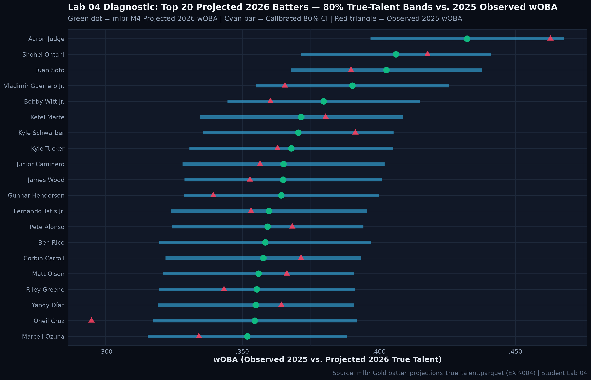

Lab 04 Work-Along: Marcel Projections, Delta-Method Aging & Physics Priors
A Step-by-Step Guided Workbook for Hands-On Learning in RStudio
Open RStudio Server at http://192.168.10.1:8787, open mlbr.Rproj, and run workbooks/lab04_player_projections_workbook.R line-by-line with Ctrl + Enter. Companion Q-CRISP study: Study 04: Player Projections, Aging Curves & Physics Priors.
1. First-Principles Projection Math: Outs, Marcel & Uncertainty
Step 1.1: Never Treat Baseball Innings Pitched (.1/.2) as Decimals
FanGraphs and MLB box scores store 1 out as .1 and 2 outs as .2 (186.2 IP = 186.6667 decimal innings, NOT 186.20!). Always convert before sum-before-divide rate calculations:
\[\text{IP}_{\text{true}} = \lfloor \text{IP} \rfloor + \frac{\text{round}\big(10 \cdot (\text{IP} - \lfloor \text{IP} \rfloor)\big)}{3}\]
Step 1.2: Era-Adjusted Marcel Shrinkage & Tom Tango’s Age Factor
Recency weights \((w_1, w_2, w_3)\) (5/4/3 batters; 3/2/1 pitchers) pool multi-season excess skill above each season’s league average and regress toward the T-1 run environment using pre-backtest reliability denominator \(M_r\):
\[\hat{r}^{\text{Marcel}}_{i,T} = \mu_{\text{lg},T-1,g} + \frac{\sum_{k=1}^{3} w_k \, N_{i,T-k} \, (r_{i,T-k} - \mu_{\text{lg},T-k,g})}{\sum_{k=1}^{3} w_k \, N_{i,T-k} + M_r}\]
Running Part 1B demonstrates why sample-size shrinkage matters: - An established 27-year-old star (1,730 weighted PA across 3 years, .380/.365/.355 wOBA) earns 76.0% reliability weight → .355 regressed / .360 Tango-aged. - A hot 23-year-old rookie (180 PA, .380 wOBA) earns only 29.0% reliability weight → .332 regressed / .344 Tango-aged!
Step 1.3: Exposure-Calibrated 80% Uncertainty Bands
\[\text{CI}_{80\%}(i, T) = \hat{y}_{i,T} \pm 1.2816 \sqrt{\hat{\sigma}_{\text{skill}}^2 + \frac{\hat{\sigma}_{\text{noise}}^2}{\widehat{N}_{i,T}}}\]
As projected playing time grows from 150 → 350 → 600 PA, the 80% wOBA half-width tightens from ±.048 → ±.039 → ±.036 (hitting 82.8% pitcher FIP and 81.4% batter wOBA empirical coverage on locked 2025 OOS!).
2. Live Statcast Spray Physics & Gold Tier 2 Backtests
Part 2 calculates Pulled Air-Ball% (LA >= 10°, spray < -15° RHB / > +15° LHB) directly from Bronze v_statcast (2025, >= 250 BIP) and inspects our locked 2024 → 2025 OOS ablation ladder:
| Rank | Batter (2025, ≥ 250 BIP) |
BIP | Pulled Air% | BIP xwOBA |
|---|---|---|---|---|
| 1 | Isaac Paredes | 302 | 39.4% | .328 |
| 2 | Cal Raleigh | 410 | 37.1% | .467 |
| 3 | Pete Crow-Armstrong | 451 | 31.0% | .401 |
| 4 | José Ramírez | 524 | 30.5% | .355 |
| 5 | Spencer Torkelson | 399 | 30.3% | .407 |
| 6 | Kyle Schwarber | 404 | 29.7% | .499 |
Adding spray physics (Pulled Air%), EV90, and Zone-Chase Selectivity (Z-O%) slashes locked 2025 Batter wOBA wRMSE from 0.03215 (true Tango B2) to 0.03121 (\(p_{\text{beat}} = 0.995\)), while M4_Component_FIP slashes Pitcher FIP wRMSE from 0.80631 to 0.77185 (\(p_{\text{beat}} = 0.995\)).
Full-Spectrum True-Talent WAR Valuation (Level 2 Completion)
By combining Marcel + Aging offensive projections with defensive runs (proj_def_runs), baserunning runs (proj_bsr_runs), and positional adjustments (proj_pos_runs), mlbr derives complete True-Talent WAR:
\[\text{WAR}^{\text{True-Talent}} = \frac{\text{wRAA} + \text{BsR} + \text{Def} + \text{Pos} + \text{Repl}}{9.77}\]
| Rank | Batter (2026) |
Pos | Proj PA | Proj wOBA | True-Talent WAR | Def Runs | Bsr Runs | Pos Runs |
|---|---|---|---|---|---|---|---|---|
| 1 | Bobby Witt Jr. | SS | 614 | .380 | 7.93 | +14.5 | +1.4 | +5.4 |
| 2 | Aaron Judge | OF | 610 | .432 | 7.28 | -5.5 | -0.4 | -6.5 |
| 3 | Cal Raleigh | C | 615 | .347 | 6.05 | +14.8 | -0.2 | +5.9 |
| 4 | Juan Soto | OF | 629 | .403 | 5.69 | -8.8 | +0.8 | -6.4 |
| 5 | Gunnar Henderson | SS | 597 | .364 | 5.57 | +2.2 | +1.2 | +4.5 |
3. Dark Cyber Visual Diagnostic

Preserved Assets: models/lab04_top20_batter_uncertainty_bands.rds & models/lab04_top20_batter_uncertainty_bands.parquet
Inspect the interactive Pitcher & Batter Plotly frontiers (with Live 2027 hover projections) in Study 04: Player Projections & Aging.
4. Hands-On Mentor Checkpoints
- Checkpoint 1 — Metric-Specific Reliability (
M): ChangeMin Part 1B from2200(wOBA) to250(K%). Compare the rookie’s trust weight and explain why strikeout rates stabilize ~9× faster than overall batting value. - Checkpoint 2 — Survivorship Bias in Aging Curves: Load
data/processed/projections_aging_curves.parquetand plotcum_delta_smoothvs.naive_centeredforgroup == "SP",metric == "FBv (mph)". Verify the-5.12 mphvs.-2.68 mphsurvivorship gap at Age 38. - Checkpoint 3 — Injured / Missed-2026 Retention (
played_2026 == 0): Filterdata/processed/pitcher_projections_true_talent.parquettoprojection_year == 2027L & played_2026 == 0Land examine how injured pitchers retain regressed aging-adjusted priors without double-counting. - Checkpoint 4 — Full-Spectrum True-Talent WAR & Defense: Inspect
proj_warvsproj_wobafor batters with positive vs negative defensive runs (proj_def_runs). Why does an elite defensive shortstop like Bobby Witt Jr. (+14.5 Def runs, +5.4 Pos runs) surpass pure designated hitters and corner outfielders in overall True-Talent WAR despite a lower raw wOBA (.380 vs .432)?
Next Lab: Lab 05: Markov Decomposed Pitching+ & Swing Decisions